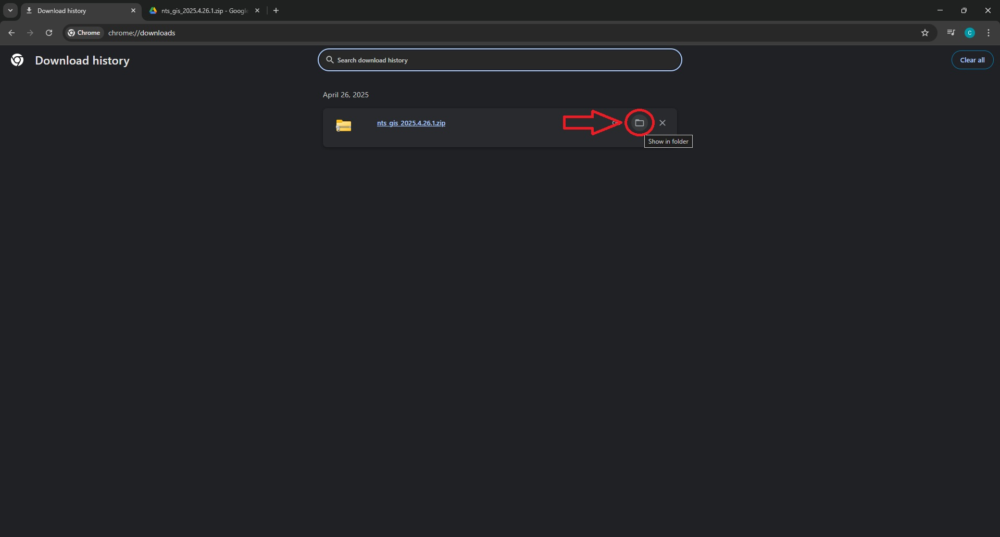

Downloading
If you prefer video instructions click here.
Click on the link below to open up the Google Drive folder with the extension. Follow the steps to download and extract the extension.
NTS: GoTo Integration Suite.
Step 1: Click the download button in the top right corner of the page.
Step 2: Click on the 3 dots at the top right and then select Downloads.
Step 3: Click the Show in folder button. This will open your file explorer.

Extracting
Step 4: SINGLE CLICK on the extension folder then press the Extract all button.
Step 5: This will open up another window. Do not change the destination folder. Click the Extract button.

Step 6: After the extraction is finished, another file explorer window will open up. You can close these windows now.
.
Step 4: Right-click on the extension folder then select Extract all.
Step 5: After the extraction is finished, another file explorer window will open up. You can close these windows now.
.